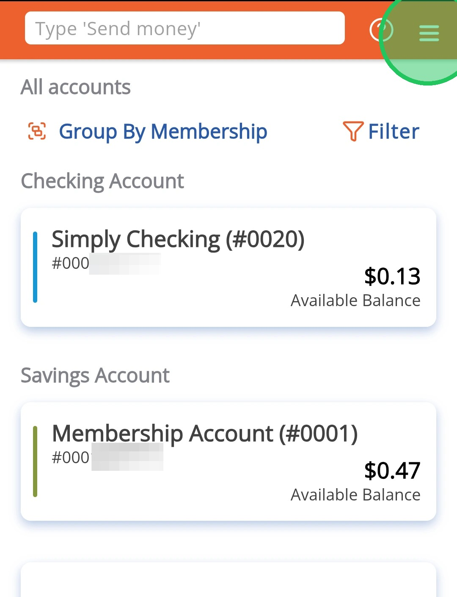
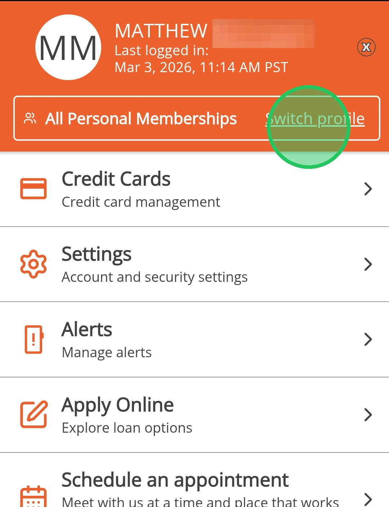
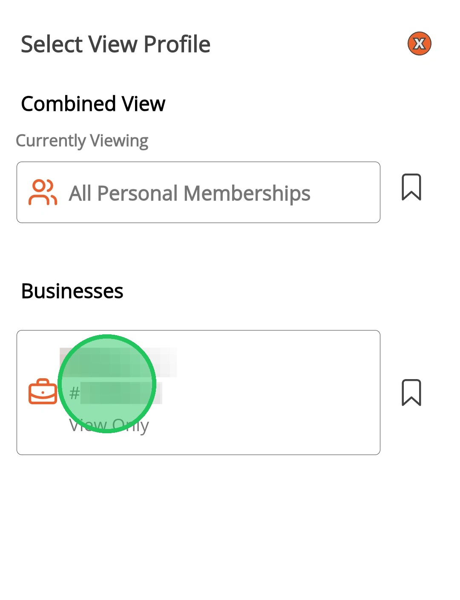
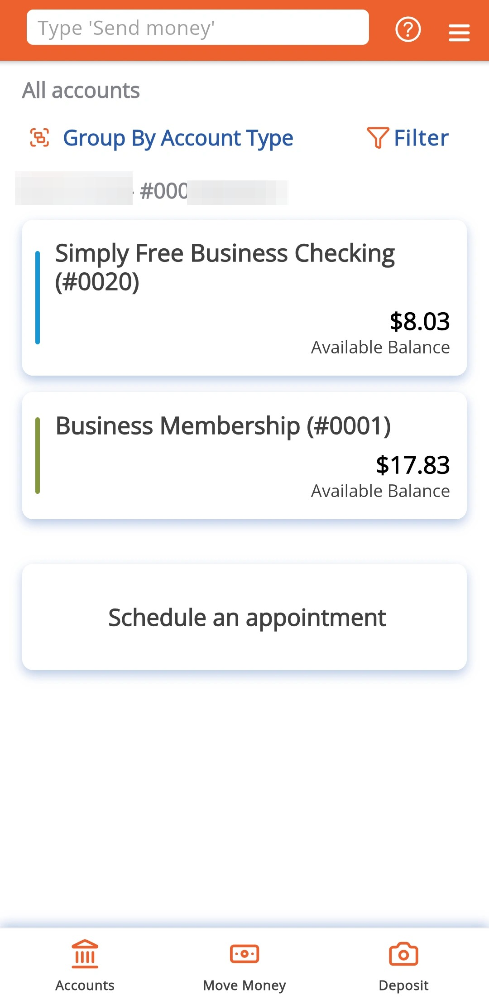

Swap Between Business and Personal Profiles
Business accounts display on a separate profile than personal accounts and this guide will show you how to swap between these profiles.
1
Log in and tap on the menu icon

2
Tap on "Switch Profile"

3
Tap on the profile you want to switch to

You may need to complete an OTP (One-time passcode) verification depending on your business role.
4
You will automatically be swapped to that profile
